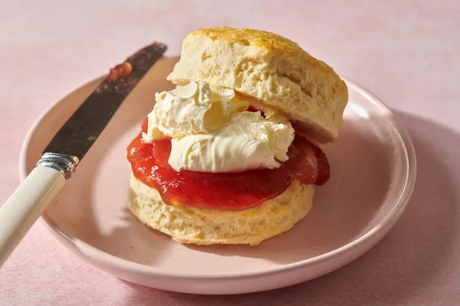

Scones Recipe

My late uncle taught me how to bake scones. He resembled my father,
who passed away when I was seven years old. After my uncle passed away last year,
this recipe became a nostalgic reminder of the memories they left behind.
Ingredients
- 1 1/2 cups (240g) gluten-free 1:1 baking flour
- 1/4 cup (50g) granulated sugar reduce to 1 tablespoon for savory scones
- 1 tablespoon baking powder
- 1/2 teaspoon salt
- 8 tablespoons (113g) butter frozen
- 2/3 cup sour cream
- 1 large egg
- 1 teaspoon vanilla extract omit for savory scones
- sparkling sugar for topping
Steps
- In a large mixing bowl, whisk together the gluten-free flour, sugar, baking powder and salt.
- Grate the frozen butter using a box grater. Add the butter to the flour mixture and combine
with a pastry cutter, two forks, or your fingers until the mixture resembles pea-sized crumbs.
- In a separate bowl, whisk together the sour cream, egg and vanilla until well-combined.
- Using a rubber spatula, stir the sour cream mixture into the flour mixture until no dry bits of flour remain.
- Spread out a large piece of plastic wrap. Using wet hands, transfer the dough to the plastic wrap.
Clean and wet your hands again then pat the dough to form a 6-inch round that is 1-inch thick.
- Wrap the dough tightly in plastic wrap and refrigerate for 20-30 minutes. Then freeze for 15 minutes.
- Preheat the oven to 260°C. Line a large baking sheet with parchment paper.
- After 15 minutes, take the dough out of the freezer. Spray a sharp knife with cooking spray and cut the dough
into 6 equal wedges. Arrange the scones on the prepared baking sheet. Sprinkle with coarse sugar, if desired.
- Place the scones in the oven, then immediately lower the oven temperature to 220°C. You want the oven temperature
to start hot so the scones turn golden brown as they cook through. Bake for 12-14 minutes until golden brown.
- Remove from the oven. Transfer the scones to a wire rack and let cool for 20 minutes before serving.
Home